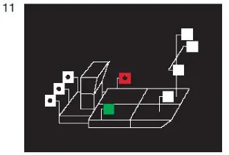
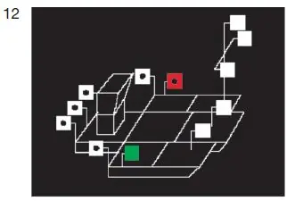
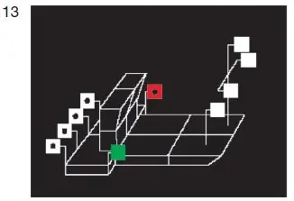
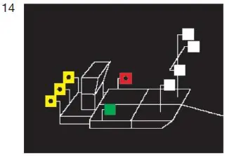
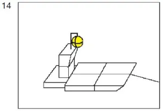

§ 3.10 Bezeichnung der Schubverbände in Fahrt(Anlage 3: Bild 11, 12, 13, 14)
Binnenschifffahrtsstraßen-Ordnung
1. Ein Schubverband in Fahrt muss bei Nacht führen:
a) als Topplichter
aa) drei Topplichter auf dem Vorschiff des Fahrzeugs oder, bei mehreren Fahrzeugen, auf dem Vorschiff des linken der Fahrzeuge an der Spitze des Verbandes; diese Topplichter müssen in der Form eines gleichseitigen Dreiecks mit waagerechter Grundlinie in einer Ebene senkrecht zur Längsebene des Verbandes angeordnet sein; die beiden unteren Topplichter müssen in einem Abstand von 1,25 m voneinander und 1,10 m unter dem obersten Topplicht gesetzt werden; sie müssen darüber hinaus auf einem Fluss mindestens 2,00 m über der Ebene der Einsenkungsmarken und mindestens 1,00 m über den Seitenlichtern, auf einem Schifffahrtskanal oder in einem Schleusenkanal so hoch wie möglich, jedoch mindestens in Höhe der Seitenlichter gesetzt werden; bb) ein Topplicht auf dem Vorschiff jedes anderen Fahrzeugs, dessen ganze Breite von vorn sichtbar ist; dieses Topplicht ist nach Möglichkeit 3,00 m tiefer als das oberste Topplicht nach Doppelbuchstabe aa hiervor zu setzen. |  |
Die Masten dieser Topplichter müssen in der Längsebene des Fahrzeugs stehen, auf dem sie geführt werden;
b) Seitenlichter
so weit wie möglich hinten am breitesten Teil des Schubverbandes, höchstens 1,00 m von den Außenseiten des Schubverbandes entfernt und mindestens 2,00 m über dem Wasserspiegel;
c) als Hecklichter
aa) drei Hecklichter auf dem Achterschiff des schiebenden Fahrzeugs in einer waagerechten Linie senkrecht zur Längsebene mit einem seitlichen Abstand von etwa 1,25 m und in ausreichender Höhe, sodass sie nicht durch eines der anderen Fahrzeuge des Verbandes verdeckt werden können; bb) ein Hecklicht auf dem Achterschiff eines jeden anderen Fahrzeugs, dessen ganze Breite von hinten sichtbar ist; befinden sich in dem Verband außer dem schiebenden Fahrzeug mehr als zwei von hinten sichtbare Fahrzeuge, ist dieses Hecklicht nur von den beiden äußeren Fahrzeugen zu führen. |  |
2.
Ein Schubverband, der durch zwei schiebende Fahrzeuge nebeneinander fortbewegt wird, muss bei Nacht Hecklichter nach Nummer 1 Buchstabe c Doppelbuchstabe aa auf dem steuerbordseitigen schiebenden Fahrzeug führen, das andere schiebende Fahrzeug muss das Hecklicht nach Nummer 1 Buchstabe c Doppelbuchstabe bb führen. |  |
3.
Nummer 1 gilt auch für einen Schubverband, wenn er bei Nacht geschleppt wird; jedoch müssen die drei Hecklichter nach Nummer 1 Buchstabe c Doppelbuchstabe aa gelb sein. |  |
4.
Wird ein Schubverband bei Tag geschleppt, muss das schiebende Fahrzeug führen: einen gelben Ball an einer geeigneten Stelle und so hoch, dass er von allen Seiten sichtbar ist. |  |